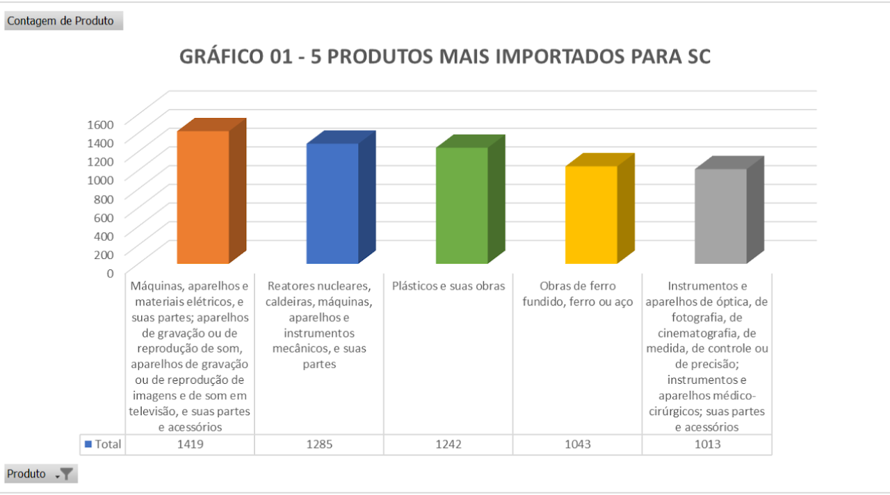
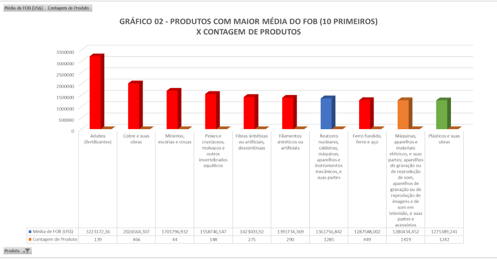
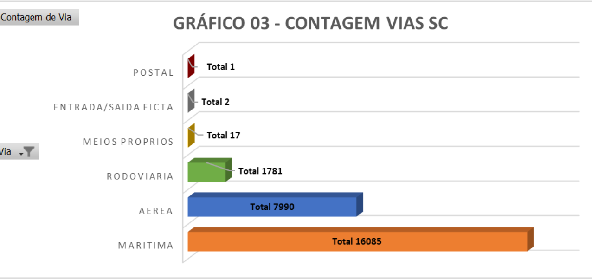
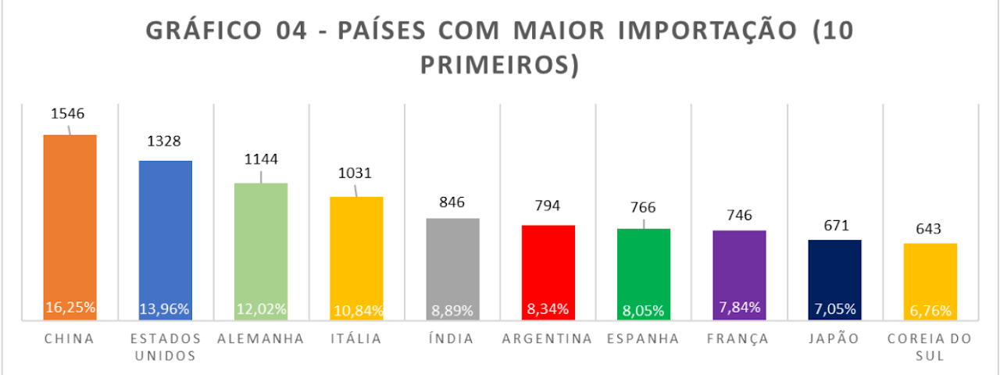
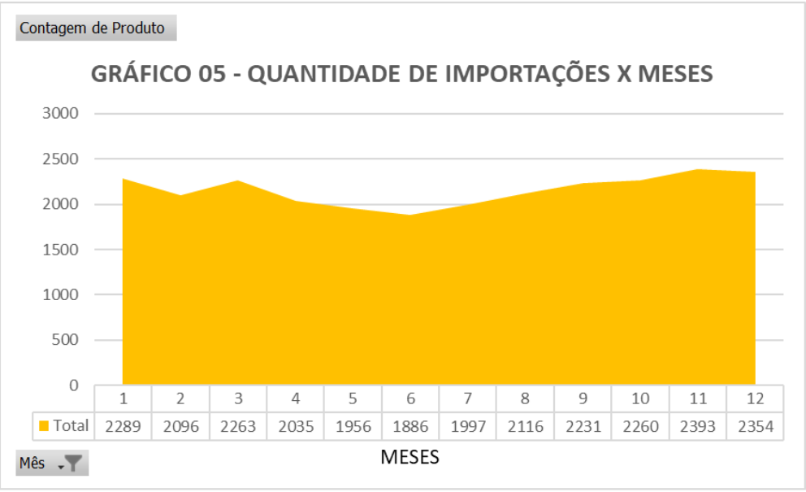

Em números
Os meses
Primeiro, os dados da planilha foram organizados com a conversão de texto para colunas, para que o Excel conseguisse lê-los. Depois, foram filtrados só os dados de interesse da empresa, com “UF Importadora” igual a Santa Catarina.
Para olhar mês a mês, uma tabela dinâmica somou o valor “FOB (US$)” de janeiro a dezembro, num total de US$ 16.091.194.139. Ordenada do maior gasto para o menor, a tabela mostra que os três meses de maior gasto foram dezembro, novembro e janeiro.
| Mês | Soma FOB (US$) |
|---|---|
| Dezembro | 1.889.761.950 |
| Novembro | 1.868.488.637 |
| Janeiro | 1.505.248.057 |
| Outubro | 1.465.948.653 |
| Setembro | 1.411.616.365 |
| Março | 1.402.536.577 |
| Fevereiro | 1.319.175.116 |
| Agosto | 1.161.509.749 |
| Abril | 1.079.881.598 |
| Julho | 1.069.908.868 |
| Maio | 1.028.939.075 |
| Junho | 888.179.494 |
| Total geral | 16.091.194.139 |
Os produtos
Os cinco produtos mais importados para Santa Catarina foram “Máquinas, aparelhos e materiais elétricos”, que aparecem 1.419 vezes nos 12 meses; “Reatores nucleares, caldeiras e máquinas”, 1.285 vezes; “Plásticos e suas obras”, 1.242 vezes; “Obras de ferro fundido, ferro ou aço”, 1.043 vezes; e “Instrumentos e aparelhos de óptica e fotografia”, 1.013 vezes.
Os dois gráficos se conversam: entre os 10 produtos com maior média de FOB, três (as colunas em azul, laranja e verde) também estão entre os mais importados em quantidade.


As vias de transporte
Entre as vias usadas para trazer as importações, a marítima teve o maior número: 16.085 importações em 2020, 62,16% do total e mais que o dobro da segunda maior, a aérea, com 7.990 (30,88%).
As vias “meios próprios”, “entrada/saída ficta” e “postal” tiveram valores muito baixos, o que faz sentido junto com o gráfico 04: a maioria dos países de origem exige transporte aéreo ou marítimo. Entre os 10 países que mais exportaram para Santa Catarina, só a Argentina permitiria outro tipo de transporte.
| Via | Porcentagem |
|---|---|
| Marítima | 62,16% |
| Aérea | 30,88% |
| Rodoviária | 6,883% |
| Meios próprios | 0,066% |
| Entrada/saída ficta | 0,008% |
| Postal | 0,004% |
| Total geral | 100,00% |

Os países e o ano
Os países com mais importações foram China, com 16,25% (1.546 produtos), Estados Unidos com 13,96% (1.328), Alemanha com 12,02% (1.144), Itália com 10,84% (1.031), Índia com 8,89% (846), Argentina com 8,34% (794), Espanha com 8,05% (766), França com 7,84% (746), Japão com 7,05% (671) e Coreia do Sul com 6,76% (643).
No gráfico 05, a quantidade de importações não teve valores discrepantes ao longo dos meses: ficou entre 1.886 e 2.393 importações, com pouca variação.

